Adding a Valve
In Desigo CC, there are default valves for all geographic directions, 2 or 3-port valves, and technical versions. After adding the graphic, the default valve is configured as per project requirements.
- In the Mode group, conduct one of the following actions:
- Click Design
 . Previously rotated objects appear in the default direction.
. Previously rotated objects appear in the default direction. - (Optional) Click Test
 . In this case, the valve does not display in its true size.
. In this case, the valve does not display in its true size. - In System Browser, select logical view.
- Select Logical > [Network name] \...\ [Plant] >
- [PreHcl (preheater)] > [Vlv (valve)]
- [ReHcl (reheater)] > [Vlv (valve)]
- [Ccl (cooling coils)] > [Vlv (valve)]
- [Hum (humidifier)] > [Vlv (valve)]
- Drag the object to the graphics page.
- The added object displays at the maximum scale. This ensures that the next object does not overlap.
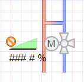
Rotating
- The fan symbol is added to the graphic.
- In the Mode group, click Test.
- The valve symbol displays as per default direction
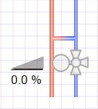
. - Select the valve symbol.
- Left-click and hold, then right-click until the valve symbol displays in the desired direction.
- Release the left mouse button.
- The valve symbol
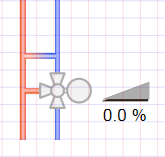
is displayed in the desired direction.
Valve Direction | ||||
Direct Entry of Direction under Symbol Properties > Substitution > Direction | ||||
0 | 1 | 2 | 3 | 4 |
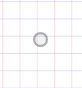 | 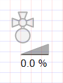 | 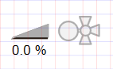 | 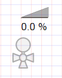 | 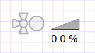 |

NOTE:
In drawing mode, the fan is always displayed in the default state.
Changing a 2 / 3-Port and Actuator Type
- The fan symbol is added to the graphic.
- In the View tab, select Properties.
- The Symbol Properties dialog box is enabled.
- In the Mode group, click Test.
- The valve symbol displays as per the valve type and the selected direction .
- Select the valve symbol.
- Select Symbol Properties > Substitutions.
- In the 2 or 3 Port field, enter a number:
- 2 for 2-port valve
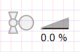
. - 3 for 3-port valve .
- In the Type field, enter a number from 0 through 2 (see Table Valve Types).
- Click ENTER or change to another entry field to activate the change.
- (Optional) Change valve symbol.
a. Right-click the symbol and select Symbol Instance > Replace. An object reference must be assigned to change the symbol.
b. Select the new valve symbol.
Valve Types | ||||||
Type | Analog | Digital | ||||
0 Neutral | 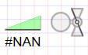 | 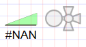 | 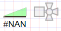 | 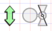 | 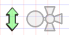 | 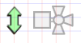 |
1 Motor | 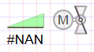 | 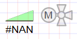 | 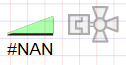 | 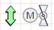 | 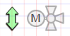 | 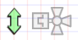 |
2 Magnet |
|
| 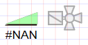 |
|
| 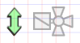 |
NOTE:
In drawing mode, the fan is always displayed in the default state (neutral).